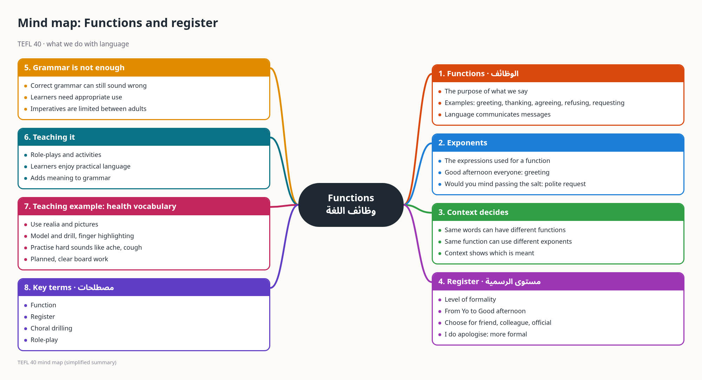

🦉
Learn TEFL
⭐
0
🔥
استمر!
🎓
عالم تيفل ٤٠: اللغة الوظيفية
📊
المستوى: مبتدئ
درس ٤٠
🎓
TEFL
📄 حمّل PDF الدرس
🧠 الخريطة الذهنية PDF
🧠 شوف الخريطة الذهنية للدرس

→
الدرس اللي قبله
كل دروس الكورس
الدرس اللي بعده
←